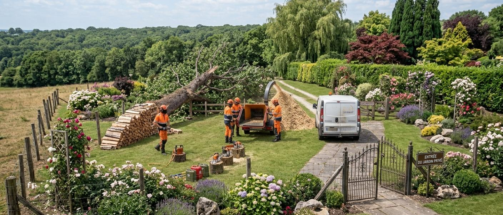
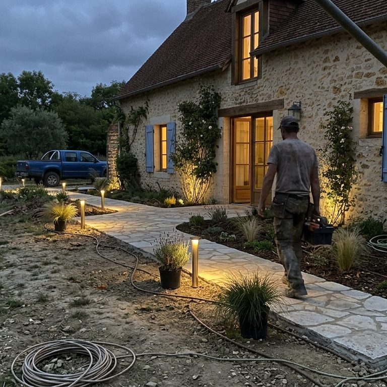

01
Création de jardins
Conception et réalisation de massifs, de pelouses et d'espaces de vie adaptés à votre terrain.
En savoir plus →Paysagiste à Moisson (78)
Moulin Martial crée et entretient jardins et espaces verts à Moisson et dans les environs. Contactez Martial Moulin pour votre projet.

Nos prestations
Création, plantation, engazonnement et entretien : des prestations pour vos espaces verts.
Conception et réalisation de massifs, de pelouses et d'espaces de vie adaptés à votre terrain.
En savoir plus →
Tonte, taille de haies et désherbage des massifs, selon vos besoins.
En savoir plus →À propos
Moulin Martial est une entreprise de services d'aménagement paysager installée à Moisson, dans les Yvelines.
Création, plantation et entretien d'espaces verts : appelez Martial Moulin pour présenter votre projet.
Martial Moulin, dirigeant

Contact
Décrivez-nous votre projet : nous vous répondons pour préparer un devis.
06 11 85 08 65